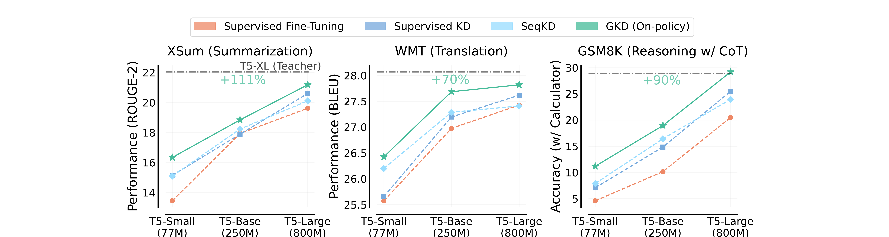
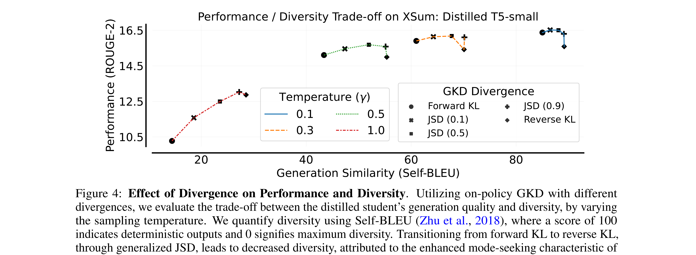
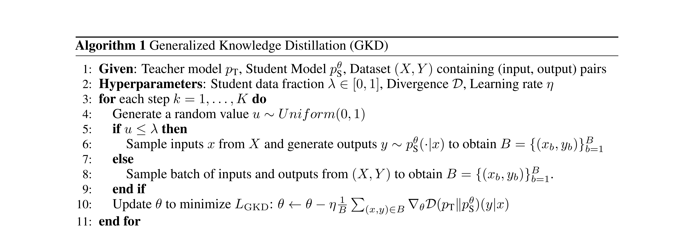
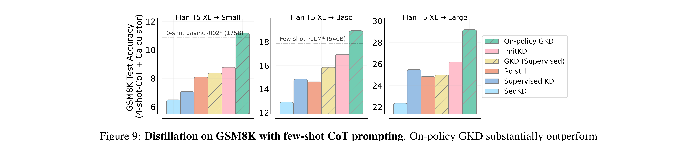
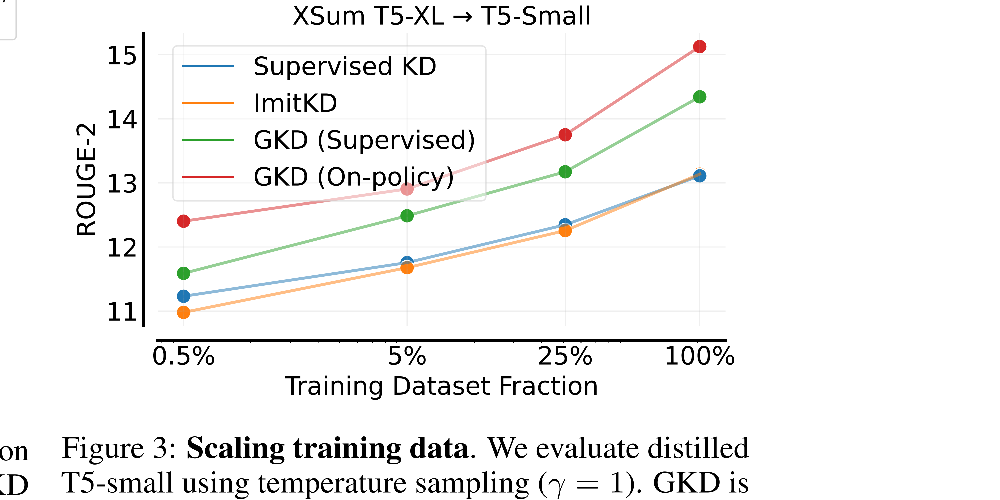
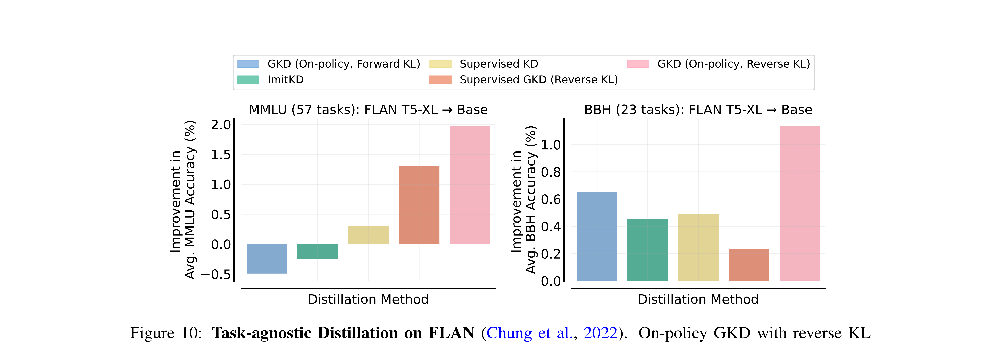

2025年，训练一个对标 GPT-4 水平的模型，强化学习阶段的算力账单大约是几百万美元。而最近半年，Qwen3、Gemma 2、MiMo 等一线模型不约而同地切换到了一种新方法——同样的效果，算力成本直接砍掉90%。
这不是标题党。Thinking Machines Lab 在数学竞赛（AIME 2024）上给出了实测数据：新方法用1,800个 GPU 小时拿到74.4%的正确率，传统强化学习用了17,920个 GPU 小时只拿到67.6%。
成本降低十倍，性能反而更好。 在机器学习里，这几乎可以称为"免费午餐"。
这个方法叫 On-Policy Distillation（在策略蒸馏），下文简称 OPD。它源自 Google DeepMind 2024年初发表在 ICLR 的一篇论文——《On-Policy Distillation of Language Models: Learning from Self-Generated Mistakes》。
下面拆解三件事：OPD 到底做了什么，为什么效果这么好，以及哪些公司已经在用。
大模型后训练的两难困境
要理解 OPD，先要理解它试图解决什么问题。
大模型的训练分两个阶段：预训练和后训练。预训练是在海量文本上学习语言的基本规律，后训练是让模型变得更聪明、更听话。我们今天讨论的是后训练。
后训练目前有两种主流方法，各有致命短板。
第一种：监督微调（Supervised Fine-Tuning，简称 SFT）
准备一批高质量的"问题-答案"对，让模型照着学。比如给模型看100道数学题的标准解题过程，让它模仿。
问题在于：模型学的是教师的文本，但推理时生成的是自己的文本。这两个分布不一样。就像你读了100篇满分作文，但写出来的东西和满分作文完全不同——你容易犯的错误，满分作文里压根没出现过。术语叫"训练-推理分布不匹配"，是监督微调最根本的瓶颈。
第二种：强化学习（Reinforcement Learning，简称 RL）
模型自己生成答案，然后只告诉它最终结果对不对。
优势很明显：模型在自己生成的文本上学习，不存在分布不匹配的问题。但劣势也很明显——一道数学题做了50步，你只说"错了"，模型得自己猜是哪一步出了问题。这叫"稀疏奖励"。为了从这么少的信息里学到东西，需要巨量的采样和极复杂的优化算法，训练成本和不稳定性都很高。

把两种方法的特点列成表，空白区域一目了然：
| 方法 | 采样方式 | 奖励信号 |
|---|---|---|
| 监督微调（SFT） | 离策略（文本来自教师/专家） | 密集（逐词监督） |
| 强化学习（RL） | 在策略（文本由学生自己生成） | 稀疏（仅最终结果反馈） |
| OPD（本文主角） | 在策略（文本由学生自己生成） | 密集（教师逐词反馈） |
OPD 的做法是：让模型在自己的文本上学习，同时给每一步都提供精确的反馈。听起来像在同时吃两块蛋糕？没错，这就是它被称为"免费午餐"的原因。
核心思想：学生自己做题，教师逐步批改
回到一个更直觉的类比。
假设你是一个刚入职的新人，公司给你安排了一位资深导师。传统的培训方式（SFT）是：导师写好标准答案，你照着抄一遍。强化学习是：让你自己做一遍，做完只告诉你"及格了"或"不及格"。
OPD 的做法完全不同：让你按自己的理解做一遍，然后导师拿着你的作业逐行批注——"这步想法对"、"这步开始跑偏了"、"这个地方的选择直接导致了后面的错误"。
关键的区别在于：教师批注的是学生自己写的东西，而不是一份学生永远不会写出来的标准答案。
具体到训练流程，分四步：
第一步：学生自己生成文本。 给学生模型一个问题，让它按照自己当前的能力写出完整的回答。这些回答带着学生自己的"口音"和"毛病"——这正是我们想要的。
第二步：教师逐词打分。 把学生的回答交给教师模型，教师在学生写的每一个词上给出自己的概率分布。这一步的计算成本很低——只需要做一次前向传播，不需要采样。这也是 OPD 比强化学习便宜的关键原因之一：强化学习需要反复采样和评估，而教师只需要"读一遍"学生的答案就够了。
第三步：计算逐词的差距。 在每一个词的位置上，比较教师和学生的概率分布差异。这个差异就是密集奖励信号——它能精确地告诉学生：你在第37个词的位置做了一个糟糕的选择，教师在这个位置会选完全不同的方向。
第四步：更新学生模型。 用这些逐词的信号来更新学生的参数，让学生下次在类似位置做出更好的选择。
教师应该怎么"打分"？
这一节稍微深入技术细节。如果你想跳过公式，直接看每个公式后面的"大白话翻译"即可，不影响理解后文。
OPD 用来衡量"教师和学生差距"的指标叫 KL 散度。但 KL 散度有两个方向，选哪个方向影响巨大。
正向 KL 散度（传统蒸馏使用）：
$$D_{KL}(P_{teacher} | P_{student}) = \sum_x P_{teacher}(x) \cdot \log \frac{P_{teacher}(x)}{P_{student}(x)}$$
大白话：老师出的所有考点，你都必须复习到。教师认为可能出现的每个词，学生一个都不能漏掉。
效果：学生的输出会比较分散、保守——什么都沾一点但什么都不精。术语叫"模式覆盖"。
逆向 KL 散度（OPD 使用）：
$$D_{KL}(P_{student} | P_{teacher}) = \sum_x P_{student}(x) \cdot \log \frac{P_{student}(x)}{P_{teacher}(x)}$$
大白话：你复习的每一个考点必须是对的，但可以不覆盖所有考点。学生选中的每个方向，必须确保教师也认可。
效果：学生会集中力量学好一种最优策略，而不是分散地覆盖所有可能。术语叫"模式寻找"。

为什么逆向 KL 更适合大模型蒸馏？因为我们不需要小模型学会大模型所有的能力（那是不可能的），我们需要的是小模型把它能做的事情做到最好。逆向 KL 正好鼓励这种"专精"而非"全面"的学习策略。
这里还有一个漂亮的巧合（其实是必然）：逆向 KL 的计算需要在学生自己的样本上进行——它在数学上天然要求"学生自己做题"。而正向 KL 用教师的样本就行，所以传统蒸馏从来不需要学生自己生成文本。
"学生在自己的作业上学习"这个核心设计，不仅在直觉上合理，在数学上也是损失函数的内在要求。形式和目标完美自洽。
从信息量的角度看： 在强化学习中，模型生成一个几百个词的回答，最终只得到一个分数——每次迭代只获得 O(1) 比特的信息。而在 OPD 中，教师在每一个词上都给出完整的概率分布——如果回答有 N 个词，每次迭代获得的信息是 O(N) 比特。就像考试改卷，强化学习只在试卷最后写一个总分，OPD 在每道题旁边都写了批注。信息量差了两到三个数量级。
这就是 OPD 数据效率极高的根本原因。
GKD：一个旋钮，从传统蒸馏到 OPD
论文提出的具体算法叫 GKD（Generalized Knowledge Distillation，广义知识蒸馏），是一个统一框架。它的核心是一个参数 λ：
- λ = 0：完全在教师的文本上学习 → 退化为传统蒸馏
- λ = 1：完全在学生自己的文本上学习 → 纯 OPD
- 0 < λ < 1：混合使用两种数据

工程上的实现非常直觉：每次训练时，用当前学生模型自己生成回答，然后拿教师模型在这个回答上逐词打分，算出差距后更新学生参数。整个流程和普通的微调训练几乎一样简单，唯一的额外开销是多了一步"学生采样"。
论文发现，λ 越接近1效果越好——也就是说，学生在自己的文本上学习效果远好于在教师的文本上学习。
实验结果：数据说话
论文在三个差异很大的任务上做了实验，GKD 相比传统蒸馏的提升幅度在 1.7 到 2.1 倍之间——不是提升了百分之几，是提升了一倍多。
| 任务 | 数据集 | 相比传统蒸馏提升 |
|---|---|---|
| 摘要生成 | XSum | 2.1倍 |
| 机器翻译 | WMT | 1.7倍 |
| 数学推理 | GSM8K | 1.9倍 |

但最震撼的发现是关于数据效率的：

仅使用 5% 数据的 GKD，就超过了使用 100% 数据的传统蒸馏。
如果你有10万条训练数据，用传统方法全部跑完的效果，还不如用 GKD 只跑5,000条。
论文还有一个重磅实验：一个只有 7,700 万参数的小模型，通过 GKD 蒸馏，在多个任务上打败了 5,400 亿参数的 PaLM——体量差了 7,000 倍，效果反而更好。

不是小模型学不会，而是之前的教学方法不够好。
工业落地：从论文到生产
先看一组实战数据：
| 方法 | GPU 小时 | AIME'24 正确率 |
|---|---|---|
| 传统强化学习 | 17,920 | 67.6% |
| OPD | 1,800 | 74.4% |
这是 Thinking Machines Lab（2025年10月）在美国数学邀请赛上的实测。成本降低近十倍，准确率提升近7个百分点。
各家的跟进非常迅速：
Google Gemma 2（2024年8月）： 论文作者的"自产自销"，Google 自家的开源模型直接应用了这套方法。
Qwen3（2025年5月）： 阿里通义千问在技术报告中首次系统阐述了 OPD 的工业级实践。明确表示 OPD 仅需强化学习全流程十分之一的 GPU 时间，就能达到可比甚至更好的效果。
MiMo-V2-Flash（2026年1月）： 在多模态场景下验证了 OPD 的有效性，说明这套方法不限于纯文本。
GLM-5： 智谱在新一代模型中也采用了类似的在策略蒸馏技术。
从2024年的学术论文到2026年成为主流后训练范式，OPD 的工业化速度堪称飞快。
OPD 的局限与未来
OPD 有一个结构性前提：你必须有一个足够好的教师模型。 在强化学习中，奖励信号可以来自规则验证器（比如数学题直接判断对错），不一定需要更大的语言模型。但在 OPD 中，教师必须是一个在目标任务上明显强于学生的模型。
这引出了两个最值得关注的演进方向：
OPD + RL 的混合训练。 Qwen3 的实践已经暗示了这个路径——先用 OPD 快速提升基础能力（因为便宜且稳定），再用 RL 在特定维度上精细调优。这可能成为未来后训练的标准流程。
推理模型的蒸馏。 随着 o1/o3 这类推理模型的出现，如何把长链推理能力高效蒸馏到小模型上，OPD 提供了非常有前景的框架。DeepSeek-R1 已经展示了从大推理模型向小模型蒸馏的巨大潜力。
此外，自蒸馏（让模型做自己的教师）和多教师融合也是值得关注的方向，但目前仍处于早期探索。
结语
OPD 的核心洞见其实很朴素：让学生从自己的错误中学习，比让学生抄别人的正确答案有效得多。只不过，"从自己的错误中学习"需要一位好教师的逐步指导，而不是仅仅告诉学生一个最终成绩。
当我们把这个朴素的洞见放进严格的数学框架（逆向 KL 散度 + 在策略采样），就得到了一个成本降低一个数量级、效果反而更好的方法。
大模型竞赛的下半场，可能不再是比谁砸的钱多，而是比谁的训练方法更聪明。OPD 是这个转变的第一枪——但肯定不是最后一枪。
论文原文： - arXiv: https://arxiv.org/abs/2306.13649
参考文献：Agarwal, R. et al. "On-Policy Distillation of Language Models: Learning from Self-Generated Mistakes." ICLR 2024.